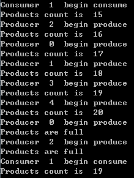
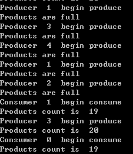
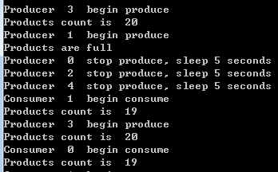

生产者消费者模型分析
操作系统中的经典模型，由若干个消费者和生产者，消费者消耗系统资源，生产者创造系统资源，资源的数量要保持在一个合理范围(小于数量上限，大约0)。而消费者和生产者是通过并发或并行方式访问系统资源的，需要保持资源的原子操作。
其实就是生产者线程增加资源数，如果资源数大于最大值则生产者线程挂起等待，当收到消费者线程的通知后继续生产。
消费者线程减少资源数，如果资源数为0，则消费者线程挂起，等待生产者通知后继续生产。
将该模型提炼成伪代码如下:
1 | func consume(){ |
consume()消耗资源，produce()生产资源，之前实现过C版本的该模型
http://www.limerence2017.com/2017/08/08/pthreadwait/
C方式实现的是抢占式的，线程切换开销较大。下面给出golang协程方式的实现。
先实现资源的互斥访问
对于资源的互斥访问，其他语言提供了线程锁，golang也有线程锁，当然可以通过channel实现，这里我给出加锁访问资源的方式，因为channel内部也是通过加锁实现的，而且我习惯用channel做协程通信，对于共享资源的控制习惯用锁来控制，也比较高效。
先定义几个全局变量
1 | const ( |
productcount为资源的数量，需要互斥处理。
wgrp主要是主协程用来等待其他协程退出。
PRODUCT_MAX 表示资源的上限，达到该值，生产者停止生产。
PRODUCER_MAX 表示生产者协程数量
CONSUMER_MAX 表示消费者协程数量
我们实现生产者代码
1 | //生产者 |
defer 的匿名函数主要是用来回收资源，不是重点
for循环内部生产者循环增加资源，为保证productcount的互斥访问，我们加了锁。
当productcount达到上限后解锁并返回，否则就增加数量，然后释放锁。
同样的道理我们实现了消费者
1 | func Consume(index int, wgrp *sync.WaitGroup) { |
消费者加锁减少productcount数量，当productcount为0，则解锁并返回。
然后我们实现主函数
1 | func main() { |
我们创建了若干生产者和消费者，主协程通过wgrp等待其他协程退出。
我们看下效果

可以看出并发的访问实现了，但是并没有实现条件等待和控制，比如当数量上限后其他生产者也可以访问。
接下来我们实现的是当数量上限是生产者挂起等待，直到消费者通知其生产。数量为0时消费者挂起，
等待生产者激活。也就是条件等待和异步协同。
实现条件等待和异步协同
协程之间的同步和等待可以使用channel，我们增加了两个全局非缓冲channel
1 | var produce_wait chan struct{} |
produce_wait 用来控制生产者阻塞等待
consume_wait 用来控制消费者阻塞等待
我们修改下生产者
1 | //生产者 |
在18行增加了<-produce_wait，这样生产者会挂起，等待消费者向produce_wait写入，从而得到激活。
另外26行增加了判断，当资源数由0到1时，激活消费者。
同样消费者实现类似
1 | //消费者 |
这里我们要有并发的思想，考虑这样一个场景，当前产品数达到上限，Produce运行完16行，刚刚解锁，还没来得及运行18行挂起，
Consume抢占到锁正常运行消耗资源，运行到28行，优先对produce_wait写入，此时该消费者挂起，生产者收到信号后，
他们都会继续执行。
我们完善下main函数
1 | func main() { |
执行golang的锁检测并运行
go run -race main.go
可以看到是可以正常运行的

我们继续用并发思想分析，我们实现了基本功能，但是有个瑕疵，我们的生产者协程较多，比如生产者协程1判断生产上限在18行挂起，其他生产者如果抢占锁后进入生产判断数量上限，也会在18行挂起，由于我们的produce_wait是非缓冲的，那么当消费者来激活时，只有一个生产者被激活，另一个一直挂着，等到消费者激活才能继续生产。这么做在一定程度限制了生产者，我们可以通过引入两个bool变量通知其他协程睡眠，避免此问题。
增加bool变量实现休眠
我们可以引入两个bool变量
1 | var stopProduce = false |
当资源达到上限或下限时，挂起单个协程，通过这两个变量休眠同类协程。
由于golang没有提供给我们休眠的api，我们就让同类型的协程sleep一会，这样也是可以提高模型并发的。
改进的生产者
1 | //生产者 |
我们在22行设置了stopProduce为true，然后在25行挂起了该协程，其他生产者协程发现stopProduce为true，则睡眠5秒。
此办法保证了资源数临界值后仅有单个协程挂起，不会影响到其他同类协程。
同样实现消费者，这里不做赘述。
考虑这样一个场景，如果在生产者设置bool解锁后，其他消费者抢占锁后为了激活生产者，优先写入信道produce_wait，
此时生产者还没有从produce_wait读取，也不会有问题，毕竟生产者迟早要读取。
接下来我们测试下

可以看到当生产者1生产数上限后，其他生产者会进入休眠。当消费者激活后，生产者继续生产，其他生产者休眠后同样可以生产。
提高了并发效率。
源码下载
完整版源码地址
https://github.com/secondtonone1/golang-/tree/master/producerconsumer
感谢关注公众号